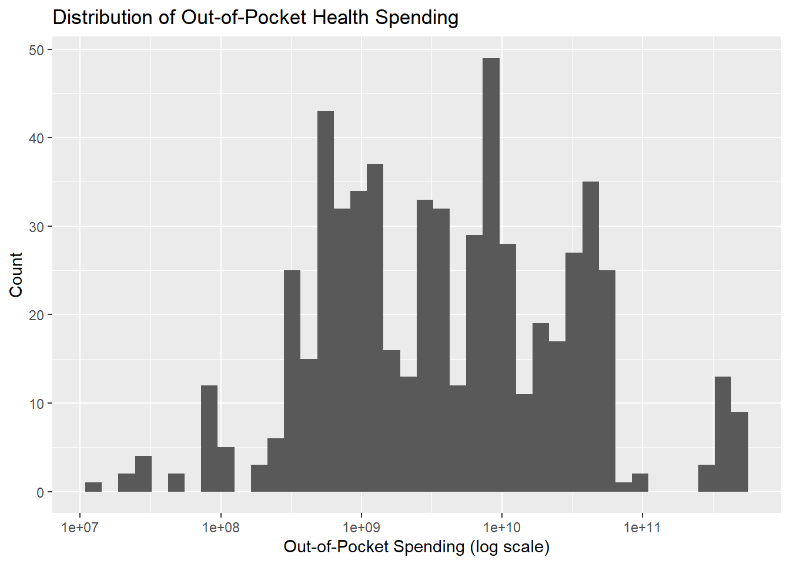
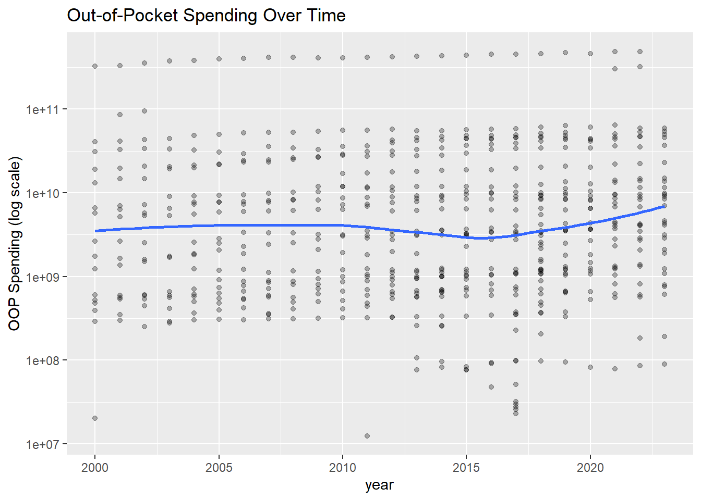
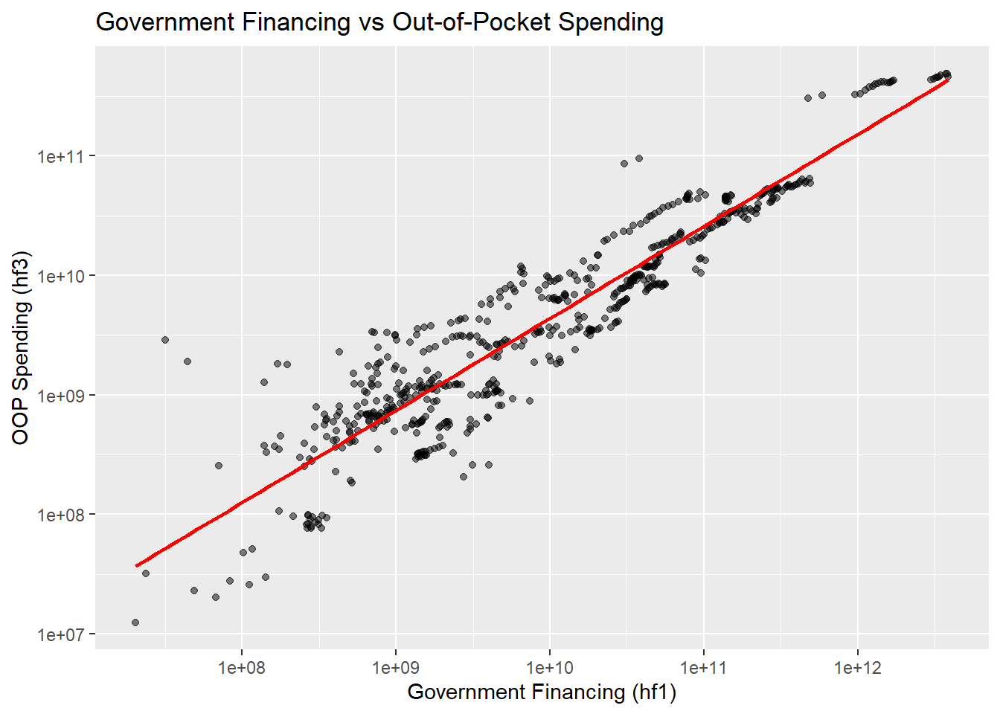
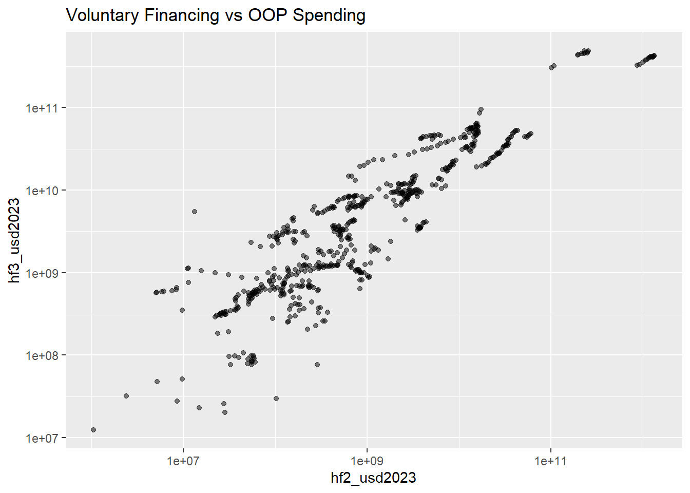
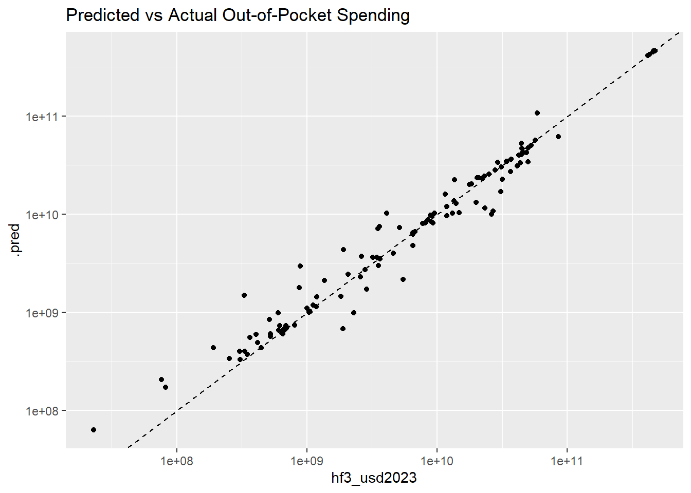

health_spending — Aggregate health spending and its breakdown by funding source (domestic government, domestic private, and external aid). financing_schemes — Health spending by financing scheme (e.g. government schemes, voluntary insurance, out-of-pocket payments). spending_purpose — Health spending by health care function (e.g. curative care, preventive care, medical goods).
Research Question
Can we predict out-of-pocket health spending (hf3) in different countries using other health financing mechanisms?
library(tidyverse)
Warning: package 'tidyverse' was built under R version 4.4.3
Warning: package 'ggplot2' was built under R version 4.4.3
Warning: package 'tibble' was built under R version 4.4.3
── Attaching core tidyverse packages ──────────────────────── tidyverse 2.0.0 ──
✔ dplyr 1.1.4 ✔ readr 2.1.5
✔ forcats 1.0.0 ✔ stringr 1.5.1
✔ ggplot2 4.0.2 ✔ tibble 3.3.1
✔ lubridate 1.9.4 ✔ tidyr 1.3.1
✔ purrr 1.0.4
── Conflicts ────────────────────────────────────────── tidyverse_conflicts() ──
✖ dplyr::filter() masks stats::filter()
✖ dplyr::lag() masks stats::lag()
ℹ Use the conflicted package (<http://conflicted.r-lib.org/>) to force all conflicts to become errors
library(tidymodels)
Warning: package 'tidymodels' was built under R version 4.4.3
Rows: 33240 Columns: 7
── Column specification ────────────────────────────────────────────────────────
Delimiter: ","
chr (5): country_name, iso3_code, indicator_code, financing_scheme, unit
dbl (2): year, value
ℹ Use `spec()` to retrieve the full column specification for this data.
ℹ Specify the column types or set `show_col_types = FALSE` to quiet this message.
Rows: 30898 Columns: 7
── Column specification ────────────────────────────────────────────────────────
Delimiter: ","
chr (5): country_name, iso3_code, indicator_code, expenditure_type, unit
dbl (2): year, value
ℹ Use `spec()` to retrieve the full column specification for this data.
ℹ Specify the column types or set `show_col_types = FALSE` to quiet this message.
Rows: 11736 Columns: 7
── Column specification ────────────────────────────────────────────────────────
Delimiter: ","
chr (5): country_name, iso3_code, indicator_code, spending_purpose, unit
dbl (2): year, value
ℹ Use `spec()` to retrieve the full column specification for this data.
ℹ Specify the column types or set `show_col_types = FALSE` to quiet this message.
ggplot(data_clean, aes(x = hf3_usd2023)) +geom_histogram(bins =40) +scale_x_log10() +labs(title ="Distribution of Out-of-Pocket Health Spending",x ="Out-of-Pocket Spending (log scale)",y ="Count" )

The distribution of out-of-pocket health spending remains highly dispersed even after log transformation. Rather than forming a single symmetric distribution, the data appear to exhibit multiple clusters, suggesting the presence of distinct groups of countries with different healthcare financing structures. This likely reflects differences in income levels, insurance coverage, and health system design. The persistence of heterogeneity after transformation indicates that variation in out-of-pocket spending is not solely due to scale effects, but also structural differences across countries.
`geom_smooth()` using method = 'loess' and formula = 'y ~ x'

Out-of-pocket spending shows a general upward trend over time, although there is substantial variability between countries. This suggests that while global healthcare spending is increasing, the burden on individuals has not decreased uniformly across countries.
Relationship with Government Financing (hf1)
ggplot(data_clean, aes(x = hf1_usd2023, y = hf3_usd2023)) +geom_point(alpha =0.5) +geom_smooth(method ="lm", se =FALSE, color ="red") +scale_x_log10() +scale_y_log10() +labs(title ="Government Financing vs Out-of-Pocket Spending",x ="Government Financing (hf1)",y ="OOP Spending (hf3)" )
`geom_smooth()` using formula = 'y ~ x'

The plot shows a strong positive association between government financing and out-of-pocket spending when measured in total absolute terms. However, this relationship is likely influenced by country size and overall health system scale, as both variables are expressed in aggregate dollars. While a proportional relationship is visible on log-log scales, substantial variation remains, suggesting that structural and policy differences between countries also play an important role.
Relationship with Voluntary Financing (hf2)
ggplot(data_clean, aes(x = hf2_usd2023, y = hf3_usd2023)) +geom_point(alpha =0.5) +scale_x_log10() +scale_y_log10() +labs(title ="Voluntary Financing vs OOP Spending" )

Voluntary financing appears to have a weaker and more variable relationship with out-of-pocket spending compared to government financing. This suggests that voluntary insurance systems may not consistently reduce individual financial burden across countries.
The top countries by average out-of-pocket spending highlight significant global disparities. A small number of countries account for disproportionately high spending levels, reinforcing the skewed nature of the dataset and suggesting potential structural differences in healthcare systems.
Relationship Between Government Spending and OOP
ggplot(data_clean, aes(x = hf1_usd2023, y = hf3_usd2023)) +geom_point(alpha =0.5) +scale_y_log10() +labs(title ="Government Financing vs Out-of-Pocket Spending")
# A tibble: 6 × 7
.metric .estimator mean n std_err .config model
<chr> <chr> <dbl> <int> <dbl> <chr> <chr>
1 rmse standard 1.49e+10 5 4.15e+9 pre0_mod0_post0 Linear
2 rsq standard 9.52e- 1 5 1.43e-2 pre0_mod0_post0 Linear
3 rmse standard 9.75e+ 9 5 2.71e+9 pre0_mod0_post0 Random Forest
4 rsq standard 9.70e- 1 5 1.57e-2 pre0_mod0_post0 Random Forest
5 rmse standard 1.11e+10 5 2.45e+9 pre0_mod0_post0 KNN
6 rsq standard 9.63e- 1 5 1.88e-2 pre0_mod0_post0 KNN
Model Selection
All models show strong predictive performance with R² values above 0.95, indicating that financing structures explain a large proportion of variation in out-of-pocket spending. However, the Random Forest model consistently performs best, suggesting that nonlinear interactions between variables improve predictive accuracy.
final_model <- rf_wf %>%fit(train_data)
Test Set Evaluation
preds <-predict(final_model, test_data) %>%bind_cols(test_data)metrics(preds, truth = hf3_usd2023, estimate = .pred)
# A tibble: 3 × 3
.metric .estimator .estimate
<chr> <chr> <dbl>
1 rmse standard 6.55e+9
2 rsq standard 9.95e-1
3 mae standard 2.86e+9
The model performs strongly on unseen test data, confirming that financing mechanisms are highly predictive of out-of-pocket spending. However, the performance gap between models is relatively small, suggesting that much of the signal in the data is linear and structurally determined, with only moderate nonlinear effects.
The residual plot shows no strong systematic pattern, suggesting that the Random Forest model captures most of the structure in the data. However, some spread in residuals at higher predicted values indicates that extreme out-of-pocket spending may be less well captured, likely due to country-specific factors not included in the model.
Final Visual
ggplot(preds, aes(x = hf3_usd2023, y = .pred)) +geom_point() +geom_abline(linetype ="dashed") +scale_x_log10() +scale_y_log10() +labs(title ="Predicted vs Actual Out-of-Pocket Spending")

This analysis demonstrates that healthcare financing structures are strongly associated with out-of-pocket health spending across countries. Government financing appears to reduce individual financial burden, while voluntary and mixed financing systems show more variability.
Machine learning models confirm that these relationships are highly predictive, with Random Forest performing best due to its ability to capture nonlinear interactions. However, the relatively small performance differences between models suggest that the underlying structure of the data is partially linear and strongly constrained by economic system design.